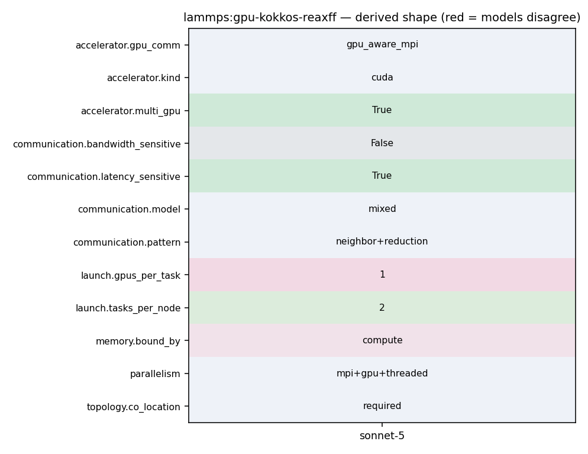

mpirun -np 2 lmp_kokkos_cuda_openmpi -k on g 2 -sf kk -in in.reax
78 regularly test the status of this, so please contact the LAMMPS 79 developers if you run into problems. 80 81 .. admonition:: CUDA and MPI library compatibility 82 :class: note 83 84 Kokkos with CUDA currently implicitly assumes that the MPI library is 85 GPU-aware. This is not always the case, especially when using 86 pre-compiled MPI libraries provided by a Linux distribution. This is 87 not a problem when using only a single GPU with a single MPI 88 rank. When running with multiple MPI ranks, you may see segmentation 89 faults without GPU-aware MPI support. These can be avoided by adding 90 the flags :doc:`-pk kokkos gpu/aware off <Run_options>` to the 91 LAMMPS command-line or by using the command :doc:`package kokkos 92 gpu/aware off <package>` in the input file. 93 94 .. admonition:: Using multiple MPI ranks per GPU 95 :class: note 96 97 Unlike with the GPU package, there are limited benefits from using 98 multiple MPI processes per GPU with KOKKOS. But when doing this it 99 is **required** to enable CUDA MPS (`Multi-Process Service :: GPU 100 Deployment and Management Documentation 101 <https://docs.nvidia.com/deploy/mps/index.html>`_ ) to get acceptable
11 See the README file in the top-level LAMMPS directory. 12 ------------------------------------------------------------------------- */ 13 14 #ifdef PAIR_CLASS 15 // clang-format off 16 PairStyle(reaxff/kk,PairReaxFFKokkos<LMPDeviceType>); 17 PairStyle(reaxff/kk/device,PairReaxFFKokkos<LMPDeviceType>); 18 PairStyle(reaxff/kk/host,PairReaxFFKokkos<LMPHostType>); 19 // clang-format on 20 #else 21
54 Wiki 55 <https://kokkos.org/kokkos-core-wiki/get-started/requirements.html>`_. 56 57 .. admonition:: NVIDIA CUDA support 58 :class: note 59 60 To build with Kokkos support for NVIDIA GPUs, the NVIDIA CUDA toolkit 61 software version 12.2 or later must be installed on your system. See 62 the discussion for the :doc:`GPU package <Speed_gpu>` for details of 63 how to check and do this. 64 65 .. admonition:: AMD ROCm (HIP) support 66 :class: note 67 68 To build with Kokkos support for AMD GPUs, the AMD ROCm toolkit 69 software version 6.2.0 or later must be installed on your system. 70 71 .. admonition:: Intel Data Center GPU support 72 :class: note
303 Running on GPUs 304 ^^^^^^^^^^^^^^^ 305 306 Use the ``-k`` :doc:`command-line switch <Run_options>` to specify the 307 number of GPUs per node. Typically the ``-np`` setting of the ``mpirun`` command 308 should set the number of MPI tasks/node to be equal to the number of 309 physical GPUs on the node. You can assign multiple MPI tasks to the same 310 GPU with the KOKKOS package, but this is usually only faster if some 311 portions of the input script have not been ported to use Kokkos. In this 312 case, also packing/unpacking communication buffers on the host may give 313 speedup (see the KOKKOS :doc:`package <package>` command). Using CUDA MPS 314 is recommended in this scenario. 315 316 Using a GPU-aware MPI library is highly recommended. GPU-aware MPI use can be 317 avoided by using :doc:`-pk kokkos gpu/aware off <package>`. As above for 318 multicore CPUs (and no GPU), if N is the number of physical cores/node, 319 then the number of MPI tasks/node should not exceed N. 320 321 .. parsed-literal:: 322 323 -k on g Ng 324 325 Here are examples of how to use the KOKKOS package for GPUs, assuming 326 one or more nodes, each with two GPUs:
307 number of GPUs per node. Typically the ``-np`` setting of the ``mpirun`` command 308 should set the number of MPI tasks/node to be equal to the number of 309 physical GPUs on the node. You can assign multiple MPI tasks to the same 310 GPU with the KOKKOS package, but this is usually only faster if some 311 portions of the input script have not been ported to use Kokkos. In this 312 case, also packing/unpacking communication buffers on the host may give 313 speedup (see the KOKKOS :doc:`package <package>` command). Using CUDA MPS 314 is recommended in this scenario. 315 316 Using a GPU-aware MPI library is highly recommended. GPU-aware MPI use can be 317 avoided by using :doc:`-pk kokkos gpu/aware off <package>`. As above for
186 If the :doc:`newton <newton>` command is used in the input 187 script, it can also override the Newton flag defaults. 188 189 For half neighbor lists and OpenMP, the KOKKOS package uses data 190 duplication (i.e. thread-private arrays) by default to avoid 191 thread-level write conflicts in the force arrays (and other data 192 structures as necessary). Data duplication is typically fastest for 193 small numbers of threads (i.e. 8 or less) but does increase memory 194 footprint and is not scalable to large numbers of threads. An 195 alternative to data duplication is to use thread-level atomic operations 196 which do not require data duplication. The use of atomic operations can 197 be enforced by compiling LAMMPS with the ``-DLMP_KOKKOS_USE_ATOMICS`` 198 pre-processor flag. Most but not all Kokkos-enabled pair_styles support 199 data duplication. Alternatively, full neighbor lists avoid the need for 200 duplication or atomic operations but require more compute operations per 201 atom. When using the Kokkos Serial back end or the OpenMP back end with 202 a single thread, no duplication or atomic operations are used. For CUDA 203 and half neighbor lists, the KOKKOS package always uses atomic operations. 204 205 CPU Cores, Sockets and Thread Affinity 206 ^^^^^^^^^^^^^^^^^^^^^^^^^^^^^^^^^^^^^^
671 } 672 } 673 674 pack_flag = 2; 675 comm->forward_comm(this); //Dist_vector(s); 676 pack_flag = 3; 677 comm->forward_comm(this); //Dist_vector(t); 678 } 679 680 /* ---------------------------------------------------------------------- */ 681 682 void FixQEqReaxFF::compute_H() 683 { 684 int jnum; 685 int i, j, ii, jj, flag; 686 double dx, dy, dz, r_sqr; 687 constexpr double EPSILON = 0.0001; 688 689 int *type = atom->type; 690 tagint *tag = atom->tag; 691 double **x = atom->x; 692 int *mask = atom->mask; 693 694 // fill in the H matrix
327 328 .. code-block:: bash 329 330 # 1 node, 2 MPI tasks/node, 2 GPUs/node 331 mpirun -np 2 lmp_kokkos_cuda_openmpi -k on g 2 -sf kk -in in.lj 332 333 # 16 nodes, 2 MPI tasks/node, 2 GPUs/node (32 GPUs total) 334 mpirun -np 32 -ppn 2 lmp_kokkos_cuda_openmpi -k on g 2 -sf kk -in in.lj 335 336 .. note:: 337
330 # 1 node, 2 MPI tasks/node, 2 GPUs/node 331 mpirun -np 2 lmp_kokkos_cuda_openmpi -k on g 2 -sf kk -in in.lj 332 333 # 16 nodes, 2 MPI tasks/node, 2 GPUs/node (32 GPUs total) 334 mpirun -np 32 -ppn 2 lmp_kokkos_cuda_openmpi -k on g 2 -sf kk -in in.lj 335 336 .. note:: 337
53 using namespace MathConst; 54 using namespace MathSpecial; 55 56 template<class DeviceType> 57 PairReaxFFKokkos<DeviceType>::PairReaxFFKokkos(LAMMPS *lmp) : PairReaxFF(lmp) 58 { 59 respa_enable = 0; 60 61 cut_nbsq = cut_hbsq = cut_bosq = 0.0; 62 63 kokkosable = 1; 64 atomKK = (AtomKokkos *) atom; 65 execution_space = ExecutionSpaceFromDevice<DeviceType>::space; 66 datamask_read = X_MASK | Q_MASK | F_MASK | TAG_MASK | TYPE_MASK | ENERGY_MASK | VIRIAL_MASK; 67 datamask_modify = F_MASK | ENERGY_MASK | VIRIAL_MASK; 68 69 k_resize_bo = DAT::tdual_int_scalar("pair:resize_bo"); 70 d_resize_bo = k_resize_bo.view<DeviceType>(); 71 72 k_resize_hb = DAT::tdual_int_scalar("pair:resize_hb"); 73 d_resize_hb = k_resize_hb.view<DeviceType>(); 74 75 nmax = 0; 76 maxbo = 1;
13 14 #ifdef PAIR_CLASS 15 // clang-format off 16 PairStyle(reaxff/kk,PairReaxFFKokkos<LMPDeviceType>); 17 PairStyle(reaxff/kk/device,PairReaxFFKokkos<LMPDeviceType>); 18 PairStyle(reaxff/kk/host,PairReaxFFKokkos<LMPHostType>); 19 // clang-format on 20 #else 21
53 using namespace MathConst; 54 using namespace MathSpecial; 55 56 template<class DeviceType> 57 PairReaxFFKokkos<DeviceType>::PairReaxFFKokkos(LAMMPS *lmp) : PairReaxFF(lmp) 58 { 59 respa_enable = 0; 60 61 cut_nbsq = cut_hbsq = cut_bosq = 0.0; 62 63 kokkosable = 1; 64 atomKK = (AtomKokkos *) atom; 65 execution_space = ExecutionSpaceFromDevice<DeviceType>::space; 66 datamask_read = X_MASK | Q_MASK | F_MASK | TAG_MASK | TYPE_MASK | ENERGY_MASK | VIRIAL_MASK; 67 datamask_modify = F_MASK | ENERGY_MASK | VIRIAL_MASK; 68
65 the printed equations and the reference implementation disagree, pair 66 style *reaxff* follows the reference implementation. 67 68 The *reaxff/kk* style is a Kokkos version of the ReaxFF potential that 69 is derived from the *reaxff* style. The Kokkos version can run on GPUs 70 and can also use OpenMP multithreading. For more information about the 71 Kokkos package, see :doc:`Packages details <Packages_details>` and 72 :doc:`Speed kokkos <Speed_kokkos>` doc pages. One important 73 consideration when using the *reaxff/kk* style is the choice of either 74 half or full neighbor lists. This setting can be changed using the 75 Kokkos :doc:`package <package>` command. 76 77 The *reaxff* style differs from the (obsolete) "pair_style reax" 78 command in the implementation details. The *reax* style was a